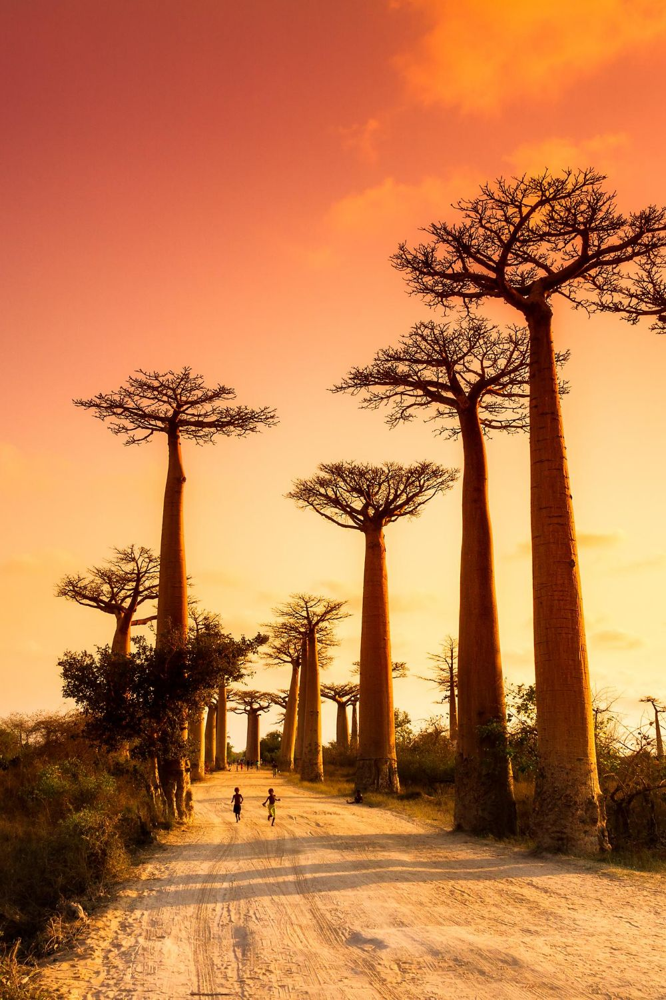
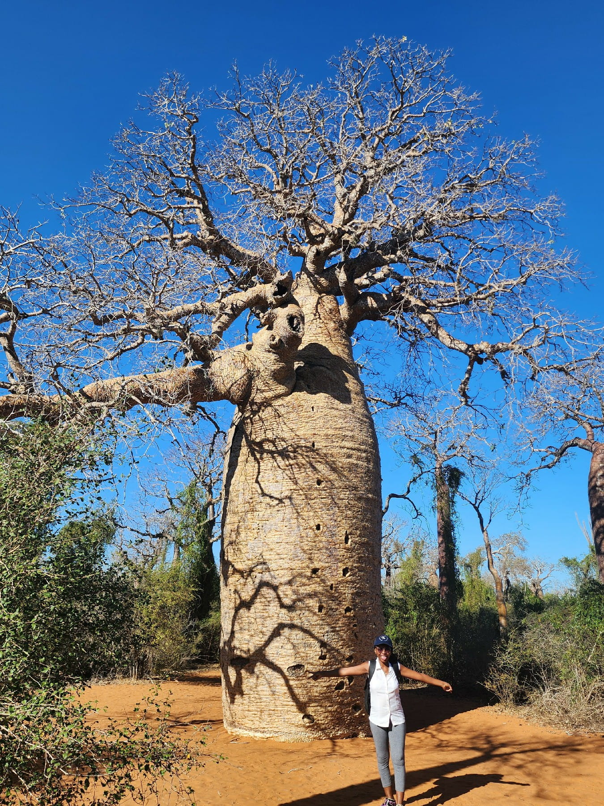
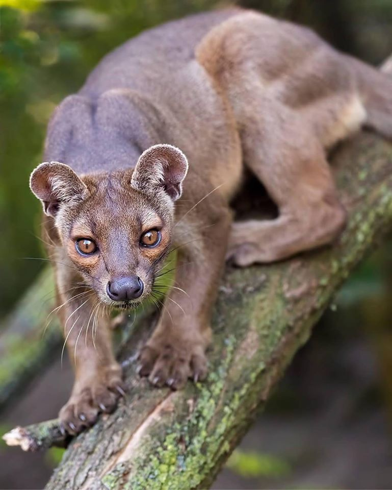
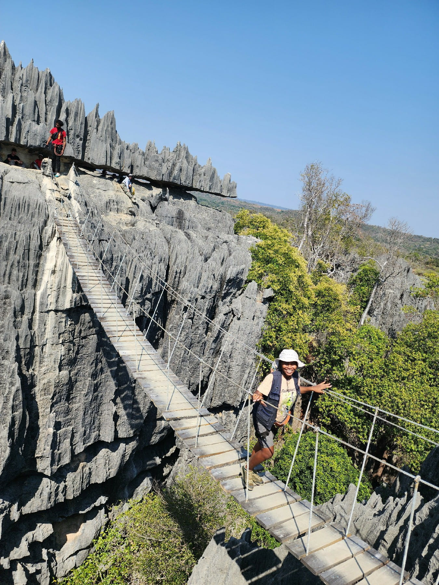
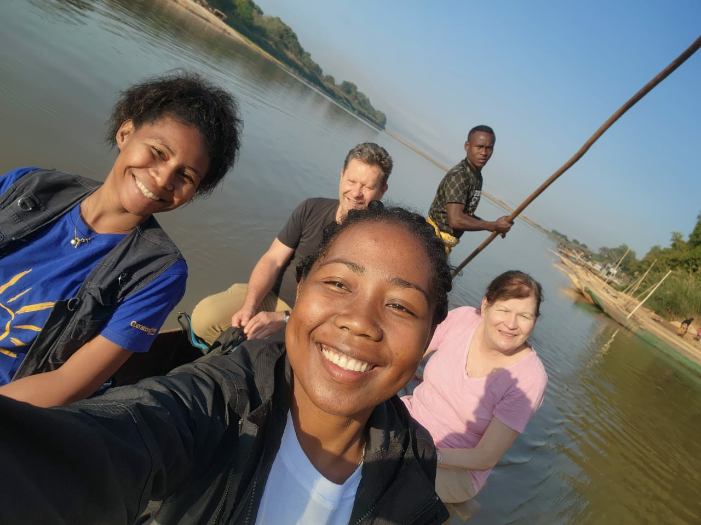

From the legendary Avenue of the Baobabs to the UNESCO-listed Tsingy de Bemaraha, discover one of the most spectacular and untouched regions of Madagascar.

Avenue of the BaobabsMorondava is one of Madagascar's most iconic destinations. Its giant baobabs, untouched dry forests, spectacular limestone formations and peaceful rivers create unforgettable adventures for nature lovers, photographers and explorers.
Each leg of the journey builds on the last — from ancient trees to the region's wildest corners.

Walk beneath centuries-old baobab trees and witness one of the world's most beautiful sunsets — a legendary landscape found nowhere else on Earth.

Explore Madagascar's famous dry forest, home to the elusive Fossa, nocturnal lemurs and many endemic species found nowhere else.

Discover spectacular limestone pinnacles, hanging bridges and breathtaking canyons in one of Africa's most extraordinary national parks.

Glide by traditional pirogue through the towering red limestone cliffs of the Manambolo Gorge, explore caves lined with stalactites and stalagmites, and discover the ancestral Vazimba tombs hidden along the riverbanks.
Ideal weather for road trips, sunsets and visiting all parks.
Lush landscapes, dramatic skies and fewer tourists.
The Avenue of the Baobabs becomes magical at sunrise and sunset.
Discover lemurs, birds and the famous Fossa with experienced guides.
Let Ma'Tour Guide Madagascar organize your unforgettable journey through Morondava.
Book your tourWhether you dream of watching the sunset over the Avenue of the Baobabs, exploring Kirindy Forest, discovering the UNESCO-listed Tsingy de Bemaraha or paddling through the Manambolo Gorge, we create personalized tours for unforgettable memories.